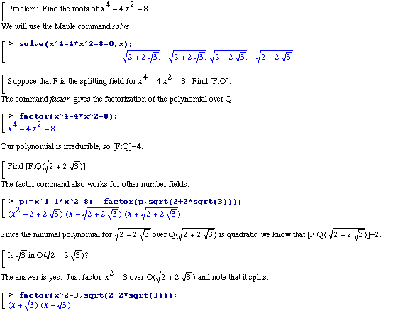

Abstract Algebra:
With Maple, it's possible to introduce topics
from field theory without emphasizing the mechanics of factorization.

Professor John Swallow has used computer algebra
to teach a course in Constructive Galois Theory
to undergrads at Davidson College (North Carolina).
Back to the top of the poster.